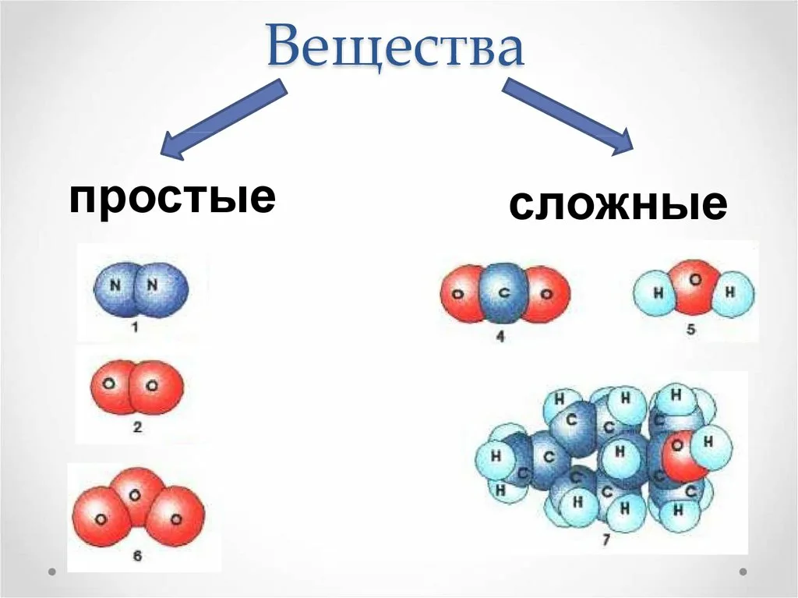

✎ Содержание:
В настоящее время известно более 100 миллионов соединений, среди которых неорганических веществ насчитывается около 500 тысяч.
По составу вещества подразделяются на простые и сложные.
Простые вещества -
вещества, образованные атомами одного химического элемента.
К простым веществам относятся, например водород, кислород, аргон, бром, магний, азот, золото. Наименьшие частицы
простого вещества могут представлять собой один атом, как у инертных газов (гелия, неона, аргона, ксенона),
содержать 2 атома (водород, кислород, азот и т.д.) и более двух атомов (озон, фосфор).
Названия простых веществ обычно совпадают с названиями химических элементов, атомами которых они образованы.
Однако одному элементу может соответствовать несколько простых веществ.
Простые вещества делятся на металлы и неметаллы.
Сложные вещества -
вещества, которые состоят из атомов двух или нескольких химических элементов.
Среди сложных веществ можно выделить неорганические и органические вещества. В состав органических веществ
обязательно входит углерод.
Сложные неорганические вещества обычно делят на четыре класса:
⚛ Число участников: 315